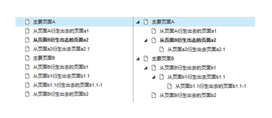
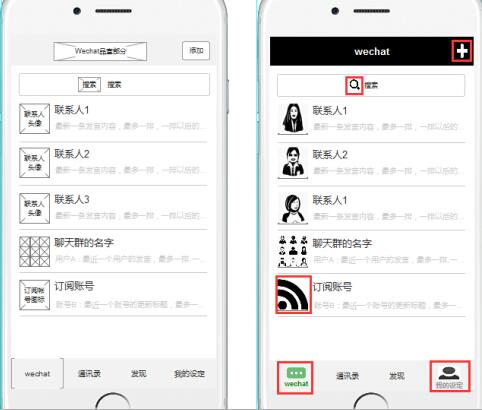
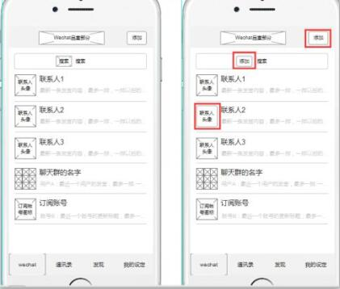
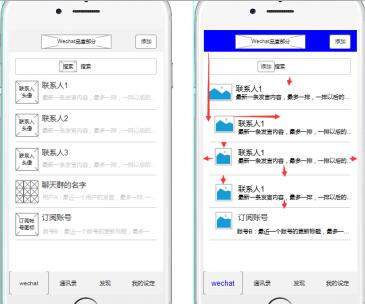
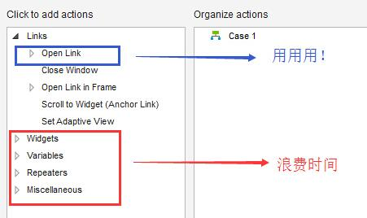

分享人：赵跃
目录
1.前言
2.画原型图的原则
3.画原型图时我们需要注意些什么
4.画原型时常见的细节错误
5.对错实例
6.画原型图的几个技巧
7.参考文献
8.感谢，提问
毛神和旭哥的原型、注释对比容易引战，砍掉了
1、手稿原型图优先于电子稿原型图
原型图是需求的外在体现，逻辑是需求的内在体现，两者并不对立，反而是相辅相成关系。
大致理顺逻辑才能开始画原型图，而画原型图的过程又可以检查逻辑。因此，画原型图的过程，也是再次梳理逻辑的过程。
对于手稿来说，想到了就秒秒钟画，错了就秒秒钟擦，验证合适不合适速度飞快；
对于电子稿来说，想到啥要画，还得各种拖动控件，搞排版，简直累人累己分分钟速度小渣渣；
因此，在快速验证或者梳理需求的过程中，推荐用手稿的方式
2.电子稿原型图要规范
可以简单归纳为
页面框架要清楚；
页面不影响设计；
页面元素要统一；
页面排版要整齐；
至少过手的东西可以齐整的地方要齐整，最好可以好看的地方要好看
3、电子稿不宜占用过多时间
虽然第二点提到了要好看，但是不能因为好看而主次颠倒，花费了大量时间在电子原型图上，那就得不偿失了。原型图可以说是需求分析的最后一层了，重点始终是前面的思考。
而为啥很多人画原型图慢呢？因为画图前不考虑清楚就上软件！
因为画图习惯不好就上软件！因为动不动就上软件，然后反反复复反反复复！
第一点，要做的是要清楚页面需要突出的内容是什么。
我们有时候真的会眼高手低，看着感觉so easy，但是真正做起来真正被问及时却发现自己真的不行真的不会。所以，这个必须明确的第一点最好要弄清楚再往下走。
第二点，就是要弄清楚功能方面需要突出的是什么？说白了也就是你要设计的这个页面要突出什么功能。
第三点，就是要明确内容板块如何划分，页面的内容主要分成几个模块，每个模块内存放的都应该是一些相近的内容。这个说实话涉及到了涉及原型图页面的深层部分了，也就是涉及到了你所设计的原型页面的大体布局，所以这个部分要拿捏好，这一部分的布局设计可能会直接影响到你的页面效果，很考验人的设计能力，当然还有美感审视能力，所以请大家在这部分的设计上多用点心，多有些自己的想法。
第四点要说的就是模块与模块之间以及页面与页面之间承接和关联的关系了。每个模块与其相近的模块之间应该有一些逻辑上的关联性，而不能随意的进行拼接，应具有上下承接关系。页面与页面之间的转化承接也要尤其连接性，切勿给人一种生搬硬套的感觉，要有一定的连贯性和联系性。
最后在原型图设计完之后，需要对其进行修改和检查。最好试着把你设计的原型按照你的思路走一遍，看看是否有哪些不顺畅、别扭的地方。而且要注意的是，这个时候你要学会换位思考，把自己当成一个用户而不是一个设计者，看看在整个流程的过程中是否有用户体验度不好的地方，试着提出一些疑问，并小心求证一下，积极改正。
一.排版粗糙
1、线头未闭合，画到边界前就终止了，手绘还可理解，但软件绘制就说不过去了。
2、元素溢出边界，比如时间属性，超出原型界面边线。
3、文字紧贴边线，未给足内边距。
4、该对齐的元素未对齐。5、该居中的元素未居中。
6、多个列表项的高度不一致，有25像素的，有23像素的……
7、上层与下层元素本该重合的线条未重合，反倒形成了一个更粗的边框。
8、主次文案的字号及字色未作区别。
9、表单等文案不齐整，尽可能更换名词促成整齐，比如：用户名、密码、手机号、身份证号码、E-mail，可以统一为：用户名称、登录密码、手机号码、身份证号、电子邮箱。
二.原型不仿真
1、原型字号太小，在原型图中首屏可容纳200字，而根据实际情况只能容纳100字，造成信息显示预期未达成。
2、列表内容都是重复或不真实的，比如标题项都写为“标题”，未按真实文章标题长度来展示，无法直观表达截字或折行效果。如果是实名制平台产品，用户名就不要列一堆不切实际的名称如“蓝精灵”、“堂吉诃德”……
3、列表项时间参数都是一样的，无法直观感受到列表是否需要按时间倒序排列。
4、用想当然的图示表达需求，比如画一条横线就完成了播放器进度条的示意，进度如何体现？是否需要拖拽操作？
三.缺乏一致性
1、每个原型界面整体尺寸需一致。
2、同一功能在不同页面叫法不同，如“搜索”、“查询”、“检索”、“找一找”……
3、数据单位写法不统一，如文件大小有的用1M，有的用100kb，可统一为1MB与100KB，要么1M与100K。
4、时间格式不统一，有的用2017年9月10日 8点6分 有的用2017-09-10 08:06:32
5、界面用语风格不一致，如“请您稍后重试”、“亲，请一会儿再试哦”……
6、弹窗及提示样式不一致。
7、选用图标的风格需一致，尽量用一套图库。
1、页面框架要清楚
很多初手画原型图，一般是画多少页面就重建多少page，并且每个page都是平行关系。在这种情况下，想通过看原型图的目录来了解产品的页面关系，完全是懵掉的，和你对接的设计和开发也可能分分钟狗带。
比较合适的方式是，画原型图之前先搞清楚页面与页面之间的关系，在页面目录中根据页面关系建立好空的页面后，再进行具体页面的设计。
举例如右图：
左边：为平行关系的页面 右边：为有主次的页面
2、页面不影响设计师的视觉
产品经理需求分析完成后，需要拿着原型图和设计师进行直观沟通，沟通清楚之后，设计师就会开始设计。
举例如右图：
左边：用固有的占位图或者按钮来表示一些需要的内容；
右边：用不知道从哪里找来的风格不同的icon拼凑；
3、页面元素要统一
可能会有以下情况：同一个页面内同一种控件代表好多种行为；同一个页面内同一种控件表示同一个行为，不同页面之间同一种控件表示好多种行为；
举例如右图：
左边右边：两个控件乱用，不能点击的地方用了按钮，能点击的地方又用了占位符；
4、页面排版要整齐
排版整齐主要指：
该左右对齐的地方对齐；该上下居中的地方上下居中；间隔该一致就一致；
举例如右图：
左边：上下、左右都对齐；
右边：额，红色标记的都没有对齐；
1、善用辅助线
辅助线能够帮助你分分钟对齐，并且无时不刻阔以用到它：画整体页面、画局部部件等等都阔以。
2、善用母版
会多处用到的一整块的东西尽量用母版
如果你采用到处复制粘贴的方法的话，那么如果有修改，你就得一次一次的修改好多地方，浪费时间；
如果你采用每次都自己重新画的话，那比上面还惨
同时，母版顺便解决了排不齐的问题，毕竟，大部件拖起来容易排整齐的多。
3、善用组合
很多童鞋一开始的时候都不喜欢用组合，反正画完都一样嘛
万一你下个版本要把整坨东西换到另一个位置上去呢？
在不是全局出现的情况下，可以把相关控件组合起来，不管是单页面上的复制粘贴还是挪动，都会非常方便，同时又无形之中解决整齐问题。
4、不要过度用case里的花哨功能
只用页面跳转，最多用面板之间的设置功能。
举例如右图：
5、不要过度用条件判断
下图登录注册流程，应该平均一个控件上至少都有5、6个判断条件吧。
可以用文字补充清清楚楚说明白的事情，不要折腾原型图
6、过度用花哨功能和条件判断，会引起控件的命名问题
做大量条件判断或者复杂的case是会需要指向某个控件的，那么对于控件的命名就需要套规则，而这点，一开始的时候你是没有意识到的。你需要不断加前缀来区分不同的控件，随着页面层次越来越多，命名会越来越复杂。
画原型图时我们需要注意些什么-CSDN
做产品原型设计有哪些需要注意的问题-知乎用户短腿柯基大屁屁
画原型图的几大坑，你被埋了吗？！-人人都是产品经理